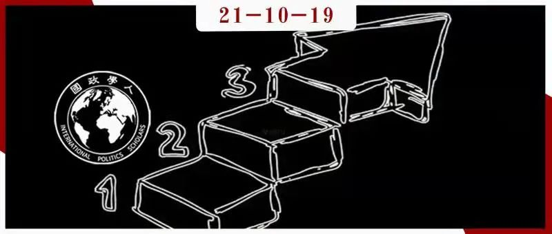
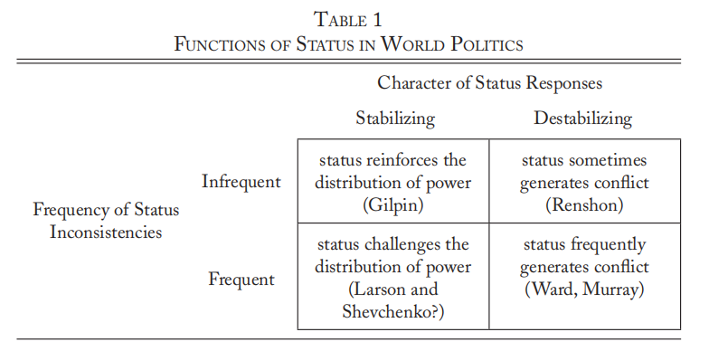

收录于合集 #《国际关系前沿》2021年第10期 2个

作品简介
作者 ： Paul K. MacDonald，韦尔斯利学院政治学副教授；Josph M. Parent，圣母大学政治学教授。
编译： 赵怡雯（国政学人编译员，山东大学东北亚学院国际政治专业）
来源： MacDonald, Paul K., and Joseph M. Parent. “The Status of Status in World Politics.” World Politics 73 , no. 2 (2021): 358–91. doi:10.1017/S0043887120000301.
归档： 《国际关系前沿》2021年第10期，总第37期。

摘要
地位是什么？它是如何变化的？有何影响？国际关系中地位研究的新浪潮集中在地位的重要定义、因果路径及追求地位往往会产生冲突这一论断上。本文的作者们对相关文献进行评估，认为这种趋势既是进步的标志，也是进步的阻碍。他们发现共识定义掩盖了地位和成员资格间的关键矛盾，且忽视了地位在某些条件下具有帮助国家避免冲突和促进合作的方式。
文章导读
世界各国领导人都直言不讳地维护本国的国际地位，并严厉抨击侵犯本国国际地位的行为。为什么领导人在公开声明中提及国家地位，这对世界政治有何影响？这是如今越来越多研究试图解答的问题。研究者们指出，地位是军备竞赛、领土扩张、外交危机及国家间战争爆发、升级的主要原因。在此视角下，各国领导人对国家地位的执著追求实质上反映了历史上国家政治外交政策的推动因素。
本文选取的四本书代表了近期一些将地位置于世界政治研究中心的最佳尝试。这篇综述评估了现有文献的成果。 提出三个问题：什么是地位？它是如何运作 的？它有何影响？当前研究的共识是： 一，地位是由基于价值属性的关于国家声望和身份的集体自助信念组成。二，地位等级制度在世界政治中十分常见，国家心理和政治因素共同促使国家寻求等级制度中的高位。三，对地位的追求往往会破坏国家间关系，因此各国应承认彼此地位主张，并寻求相应对策。
但从另一方面看，这种共识也是研究发展的阻碍。它掩盖了本应公开并列的横切逻辑。这些研究在核心概念部分存在不可调和的矛盾，为研究进一步发展，我们应该了解这些矛盾，完善理论论证，以帮助分析。
本文将关注点放在对地位与外交政策和国家间冲突联系的研究上。第一节，简要概述四本书；第二节，梳理学者们在定义和衡量地位时面临的挑战；第三节，探讨学者们对于地位如何影响外交政策的不同思考方式；第四节，考察地位与竞争的关系，并概述了地位推动和平的可能性；第五节，对现有研究应如何改善理论基础并扩大实证应用范围提出建议。
01
书评摘要
这四本书共同的目的是强调地位在世界政治中的重要性。《崛起大国的地位与挑战》一书中，Steven Ward认为地位为新兴大国追求旨在推翻现有国际秩序的修正主义外交政策提供了最有力的解释。《国际关系中争取承认的斗争：地位、修正主义和新兴大国》一书中，Michelle Murray认为新兴大国的地位主张未得到承认是权力过渡期间竞争冲突螺旋式上升的主要原因。《为地位而战：世界政治中的等级和冲突》一书中，Jonathan Renshon指出各国常为了提高自己在特定群体中的地位而相互争斗。《追求地位：中俄外交政策》一书中，Deborah Welch Larson和Alexei Shevchenko认为推动中俄等大国外交政策选择的，是对地位的追求，而不是财富或权力。
首先，这四篇文章对地位有相同的定义，即地位指的是行为体在社会等级制度的位置，对地位的集体评估取决于他者对一个国家在一系列有价值的特征上排名的看法。在国际政治中，这些特征包括军事力量、经济发展、文化成就、外交技巧和技术革新。但地位是社会性的，它明确了行为体能够具备什么权利、承担什么义务，与其他处于支配地位和从属地位的国家的相处的模式。
其次，四篇文章都详细阐述了地位为何是国际政治中核心且持续存在的问题。Renshon观察到领导人痴迷于攫取并捍卫国家地位，Ward认为领导人可能出于不同的原因而渴望地位，如在对抗中拥有好处、增强集体自豪感或有利于国内政治的合法性。
第三，四篇文章都详细说明了追求地位可能会对世界政治的稳定产生破坏性。Ward认为对地位的焦虑可以使强硬派在国内外交政策方向的竞争中胜过温和派。Murray认为被否认“世界强国地位”的新兴大国会因积极追求高地位的行为而遭受猛烈抨击。Deborah Welch Larson和Alexei Shevchenko承认各国可能会采取不同的策略以获取地位，这取决于精英群体的开放性以及他们与既定大国价值观的相似性。
02
地位的概念及其复杂性
地位的构成要素很好理解：在世界政治中存在着一组集体价值属性，国家在这些价值属性上占据不同的位置，地位高的国家与地位低的国家拥有不同的权利和责任。但本文列举的研究中存在重大差异。其中最为显著的是：地位主要是指位置还是成员资格，地位最好用定量还是定性的方法来捕获？
2.1 定义地位：位置与身份
地位的共识定义中主要歧义是最好将其视为相对地位的连续衡量标准，群体成员的二分属性，还是两者的某种结合。大多数人承认地位是指固定群体中的成员资格，但从理论上讲，地位和成员身份是不同的概念，且从经验上分析，它们往往是不匹配的。正如战后日本的经济实力靠前，但缺乏在联合国体系中被赋予合法大国的制度性权力。而战后法国虽从物质因素上处于国际体系的边缘，却获得了联合国安理会常任理事国的席位。
在实践中，部分学者将地位视为一种度量状态，可以用来建立基线、进行比较和评估价值。Renshon指出等级地位不是是否拥有的问题，它关系到相对地位。而是否能够被认定为高地位，取决于我们所依赖的评判标准。其他学者关注身份资格，认为地位与认可度密切相关，重要的是高地位国家是否愿意让他国加入高等级中。Murray强调地位是指被认可的身份，一个国家只有在获得认可时，才能获取所需要的权威，以确保其追求的身份。虽然身份资格往往是没有争议的，但其可能受到非身份因素的影响，这样身份资格就失去了很多意义。
简而言之，现存研究缺乏一套明确的理论预期，即为什么国家可能更关心身份资格而不是排名，以及如何在每种情况下聚合有价值的属性。 混合解决方案回避了这些基本问题，允许学者将地位概念化，这对他们的主张带来便利。混合解决方案也淡化了两种地位之间的本质区别，但我们不应将二者等同。
2.2 评估地位：定量与定性方法
衡量地位有两种方法：使用定量数据生成跨国排名的衡量标准，使用定性方法来确定政策制定者的身份动机。 定量的主要优势之一是其有助于阐明地位和物质能力的偏离程度，并有助于深入理解为什么一些国家在物质禀赋条件相同，地位高低却不同。
但量化方法的一个明显挑战是决定如何最好地操作排名。Renshon等一些学者从建立外交关系或外交交流方面进行评估。运用谷歌的PageRank算法和其他更直接的地位衡量方法，如官方国事访问。但产生排名的技术越复杂，政客们在评估自身地位时采取类似核算方法的可能性就越小。更重要的是，量化指标只是地位的粗略代表，无法反映自愿服从。除非将财富、权力和利益与外交承认分离开，否则无法确定地位是否会推动承认。
定性方法是在政策制定者的声明和行动中寻找判断地位的证据。这种方法的优势在于有可能捕捉到地位主观和感性的方面。最主要的问题是，领导者甚少直白地讨论地位，而是使用国家荣誉、国家尊严等词汇唤起地位。这会受到不同因素的影响，如领导者策略性地使用情感语言、群体文化和狭隘利益可能驱动关于地位的言语表达。
定性方法的另一问题在于，它们几乎完全聚焦于追求地位的案例上，而不是尊重地位。国家往往通过主张较高的地位来寻求尊重，但很少有证据表明地位会转化为尊重。这样对地位的追求就会接近唯我论。 各国出于各种各样与地位无关的原因，将自己的政策与追求高低位的偏好保持一致。
总之，定量和定性方法具有各自优势，但两种方法都未完全抓住地位的重要特征表现——自愿服从。如果高地位并没有带来其他国家的尊重，那么对地位的追求本身可能只是一种幻想。
03
地位如何运作：条件和机制
地位研究者们一致认为，国际政治中充满了地位等级，各国都被驱使着提高自身地位。那么，在哪些条件下会引发对地位的担忧，这种担忧又会通过何种机制影响外交政策等问题。
3.1 条件：由位置提示还是对事件的响应？
虽然学者们坚持国家渴望尊重，但他们承认地位驱动的行为在频率和强度上可能会有所不同。许多学者认为，某些立场迫使国家关注地位。Larson and Shevchenko强调强大的国家渴望获得强大的权力地位，而大国地位意味着在重要问题上要与其他国家协商。因此为了获得或维持大国地位需要花费巨额资金，是以国家的权力和财富为代价的。Ward观察到不断增长的财富和军事力量使崛起国家与大国实力趋同，促使崛起国寻求同等的地位、影响力和权力。
对于何种类型国家更加关注地位众说纷纭（见下表），但Ward承认当前研究尚未发展出一个对于地位关注的显著性差异的综合说明。
_|
哪类国家
关注地位
|
原因
—|—|—
Larson and Shevchenko
|
强大的国家
|
利益从地位中获取
部分学者
|
中等国家
|
拥有更高地位将获得更大利益
部分学者
|
小国
|
提高地位是获得影响力为数不多的途径之一
Ward
|
崛起国家
|
_
部分学者
|
衰落国家
|
地位有助于抵消其相对能力的下降
将地位根植于特定的结构位置的缺点是，很难将地位的影响力从相对权力中分离出来。国家地位是各国讨论权力地位时使用的语言。 Renshon通过强调地位和权力之间的脱节提供了一个解决这个问题的方法。但Renshon的方法引出了第二个问题：如何识别地位的不一致或缺陷？识别地位缺陷需要一个额外的步骤：我们必须根据物质能力产生对等级的基线期望，然后将其与身份预期进行比较。然而，衡量国家实力有许多且存在争议的方法，这使得展示一个国家的立场变得更加困难，也使人们很难知道一个国家是否得到了恰当的尊重。
另一种方法是将地位与羞辱性事件关联。Murray提出当老牌大国将一个崛起中的大国视为劣等行为体，否认其理应获得的地位时，崛起中的大国会觉得这是一种不尊重。新兴大国选择与老牌大国进行强有力的竞争，迫使这些国家承认其雄心勃勃的地位。Ward则认为当老牌大国否认新兴国家地位时，会让新兴国家试图抗议、推翻现有国际秩序。
部分研究者强调屈辱事件会引发对地位的痴迷追求。 对地位的关注可能是由国家立场或某些事件造成的，但对地位和事件的解释之间并没有形成共识的逻辑。以事件为基础的解释往往归结为羞辱，但羞辱的构成是庞杂的（如谈判技巧、战略动机等），很难从国际和国内的谈判中剥离。 如果国家注定要通过位置寻求地位，那么事件在很大程度上都是现象性的。如果羞辱性事件推动了地位提高，那么提前预测哪种国家会最迷恋地位就变得更加困难了。
3.2 机制：领导心理学和国内社会
一旦对地位的关注被提出，它们必定以某种明确且一致的方式影响外交政策决定。学者们关注两种不同机制：一是领导者的心理、感知和情绪；二是国内政治。
第一种，Larson and Shevchenko以社会认同理论为基础，认为人的部分身份来源于社会群体的成员身份，且人本性中存在一种优越感。领导者通过追求旨在“提高（国家）地位”的“身份管理策略”来应对自卑感。Renshon同样认为一旦对地位的关注被触发，领导者其自身的地位价值就会增强，因此更愿意冒风险来获得。
虽然将领导人放在地位如何影响外交政策的中心是有道理的，但我们需谨慎对待如何将社会心理学转化为世界政治的诸多理论。另一个问题是分析层次，强调领导心理学的理论认为，领导者重视国家声誉等同于重视自身声誉，但许多领导人更关心个人声望。一旦追求国际地位是以牺牲国内声望为代价的，大多数领导者会选择后者。更重要的是何种领导者会极其看中地位也并不明确。
第二种，Ward认为强硬派可以利用“外国势力”削弱温和派领导人的影响力，迫使国家采取追求地位的、激进的、拒绝主义的外交政策。虽然这提供了合理的政治解释，但国内政治要素并未充分说明。首先，没有证据表明国内选民看重地位；其次公众向强硬派转向或许是出于民族主义团体不断表达对集体不满的原因；第三，没有具体说明哪些政权对地位最渴求。
总而言之，将地位与外交政策联系的任何机制都是可信的，但关于领导人心理与国内政治相互作用的文献缺乏成熟的理论。
04
追求地位的影响：竞争及其竞争者
如果国家出于广泛的原因被迫追求地位，那么这会对世界政治产生什么影响？大部分学者担忧对地位的追求会带来不稳定。下文从两方面进行详细阐述：追求地位至何种程度会要求竞争，以及地位竞争在何种程度上会导致冲突。
4.1 地位竞争的普遍性
地位研究中一个问题是，何种程度上需要威胁和使用武力来裁定地位排名。Murray发现被剥夺大国地位的新兴大国通常会通过增强军事力量来使自己获得承认，这种争取承认的斗争可能很快演变成军备竞赛、领土争夺、遏制和战争。 但虽然大国总体上更有可能进行竞争，但很难确定竞争行为是对地位的回应，还是权力的副产品。 无法解释国家为什么不选择其他战略以提高国际声望。正如 Larson和 Shevchenko指出的，地位较低的国家可以采取多种策略来改善地位，包括采用主导力量的政治、经济和社会规范，提升社会创造力以进入更高层的机构或组织。
4.2 地位竞争的不稳定性
一旦国家选择争夺地位，那么冲突爆发的风险会显著增加。这种悲观的观点由两种相关联的假设驱动。其一，地位焦虑一旦触发就难以缓解；其二，国际观众不愿或无法解决受害国的地位问题。地位等级高的国家不愿失去特权地位，“地位调整”无法实现。
但作者仍对这些论点持怀疑态度。首先，在竞争成本高昂的情况下，各国往往愿意放弃对地位的要求；其次，如果地位高的国家可以换取政治、经济或制度支持，往往愿意满足地位要求；第三，尽管地位困境的概念依赖于冲突的螺旋模型，但威慑模型也同样适用。
4.3 地位在世界政治中可能发挥的作用
正如上文所述，地位研究的基础仍不完善。我们不知道国家发出地位要求的频率，其他国家接受或拒绝这些要求的频率，以及这些不同的反应产生竞争或绥靖的频率。所有这些都提高了一种可能性，即地位等级可能在某些条件下促进稳定和合作。
为了探讨地位在世界政治中的不同作用，本文考虑两个潜在的维度。一是，地位不匹配的频率，假设当国家被剥夺其认为自己应得的地位时，他们会提出更频繁更强烈的地位要求。二是，对地位的反应特征，国家会顺从或竞争。
作者通过表格展现了地位可能影响世界政治的四种不同方式（如下表）。

-
当地位不匹配是常见的，地位会导致不稳定的反应，会对世界政治产生极其有害的影响。（右下象限）
-
当地位不匹配的情况相对较少，地位仍然可能是危险的，但不一定使国家衰弱。（右上象限）
-
当地位不匹配的情况很少发生，地位促使非暴力反应，地位将倾向于反应和加强权力的分配。（左上象限）
-
当地位不匹配是常见的，且引起和平反应，地位作为一种自主的、规范性的标准，各国用来评价和挑战彼此。（左下象限）
最重要的是，地位不一定会破坏世界政治的稳定，尽管何时且为何会出现上述情况仍有待探索。
05
结论
地位研究的学者并没有解决身份资格与位置是如何结合进而创造地位的，也没有提供直接且有信服力的对地位的衡量标准，也无法判断哪些国家对地位最感兴趣，以及地位影响外交政策的途径。学者们忽视了地位可以化解冲突并促进合作的方式。
在本文中，作者们提出经验的可能性需要更加多样化，这取决于国家提出地位要求的频率以及是否需要竞争来裁决地位的程度。四本书中趋近的主张展现了地位研究的进展。而下一步学者们应该更清楚地阐明不同理论的立场，并设计新的经验策略来解决分歧。
本文给出以下建议：首先，学者们应收紧定义并探索其他的地位衡量标准。其次，学者们应更多发展将地位与外交政策结果联系起来的具体因果机制，特别关注不同机制的运行条件以及不同机制间如何相互作用。最后，学者们应具有批判性，去探索地位在其他领域发挥的作用。
综上所述，这些研究表明，最初对大国和地缘政治的强调可能会忽视整体。地位可能看起来是零和的，而争夺它的竞争可能看起来不稳定。但这或许是因为强权政治是一个相对收益、对欺骗的恐惧和悲剧结果已经占主导地位的领域。最终，地位可能会支撑世界秩序。
译者评述
从冷战美苏争夺霸权地位，到二战后日本谋求政治大国地位，美国试图维护超级大国地位，地位仿佛是一个包含甚广的代名词。本评论文章的价值在于一针见血地指出地位研究的几点困境，即定义、衡量标准、因果机制不明、惯性判断竞争等。对地位的追求与竞争冲突之间的因果关系并不明确，崛起国采取修正主义行为和对抗性的对外政策受多重因素的共同作用。将权力与地位相分离、对此的探索不仅能够主观上降低因地位而产生的竞争，也能熄灭以争夺地位为借口的对抗火花。
地位具有的社会属性使概念和规范的形成面临困难，但这同时也为拓展了研究的多种可能和方向。针对一些有悖于既有理论的现实，作者提出地位研究的发展方向给出了更多的思考方向：地位本身的界定以及其与外交政策的因果机制如何运作。除此之外，地位对国内政治和内部冲突是如何相互作用，与全球治理的关系均是有待探索的议题。
注释
本文选取四篇文章进行评述
【1】Deborah Welch Larson and Alexei Shevchenko. 2019. Quest for Status: Chinese and Russian Foreign Policy. New Haven, Conn.: Yale University Press , 352 pp.
【2】Michelle Murray. 2019. The Struggle for Recognition in International Relations: Status, Revisionism, and Rising Powers. New York, N.Y.: Oxford University Press , 280 pp.
【3】Jonathan Renshon. 2017. Fighting for Status: Hierarchy and Conflict in World Politics. Princeton, N.J.: Princeton University Press , 328 pp.
【4】Steven Ward. 2017. Status and the Challenge of Rising Powers. New York, N.Y.: Cambridge University Press , 282 pp.
词汇整理
煽动者；煽动政治家 demagogue
破译 decipher
并列 juxtapose
资源禀赋 material endowment
唯我论 solipsism
责编｜王图梓 吴天麟
排版｜胡蝶 梁羽
文章观点不代表本平台观点，本平台评译分享的文章均出于专业学习之用, 不以任何盈利为目的，内容主要呈现对原文的介绍，原文内容请通过各高校购买的数据库自行下载。

国政学人
支持学术公益与知识传播
微信扫一扫赞赏作者 __赞赏
已喜欢，对作者说句悄悄话
取消 __
发送给作者
发送
最多40字，当前共字
上一页 1/3 下一页
长按二维码向我转账
支持学术公益与知识传播
受苹果公司新规定影响，微信 iOS 版的赞赏功能被关闭，可通过二维码转账支持公众号。